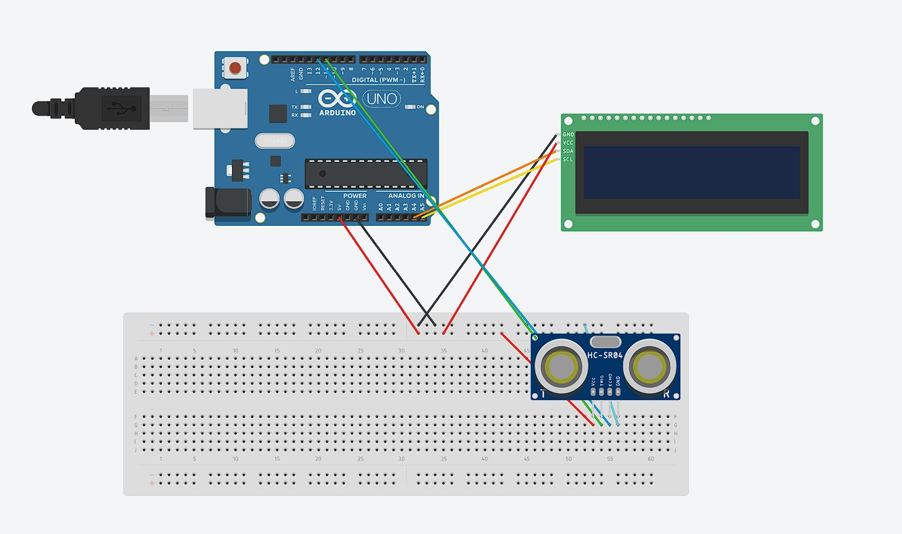
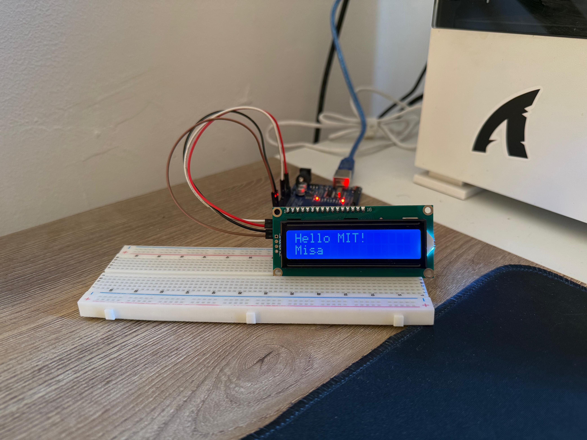

1.Interactive Sensor Hub with Multi-State UI
1.What does the tool do?
A standalone embedded system that utilizes an Ultrasonic Sensor and DHT11 to monitor environmental data. The system features a custom-built, three-page user interface (Menu, Radar, Weather) navigated via a physical analog joystick, with integrated safety logic and acoustic alerts.
2. Why I built it:
I wanted to push beyond basic “input-output” sketches and move into System Architecture. My goal was to master I2C communication, complex nested logic, and state management in C++, creating a project that demonstrates my ability to solve real-world hardware/software interface problems.
3. How it works:
-
For the user:
The LCD displays a “Home” menu. The user “toggles” modes by flicking the joystick. Right enters Radar Mode (Live distance tracking in cm/in with a proximity alarm). Left enters Weather Mode (Live Temp/Humidity). A return flick brings the user back to the Home menu. - Technical:
- The Brain: The Arduino processes analog signals from a joystick (A0) and digital signals from the Ultrasonic and DH11 sensors.
- Communication: I used the “Wire.h” and “LiquidCrystal_I2C” libraries to manage data transmission over the I2C bus, significantly reducing the number of wires needed for the display.
- Distance Logic: The system calculates distance my measuring the Pulse-In duration of an ultrasonic wave and converting time into distance using the speed of sound (Distance = Time*0.034/2).
-
For the user:
4. Technical Challenges:
-
The “Flicker” Problem:
The standard code cleared the screen every loop, causing a violent flicker that makes the text unreadable. I implemented a// Logic to handle Feet/Inches vs Centimeters bool warningActive = false; if (distanceCm <= 10 && distanceCm > 0) { if(!warningActive) { myScreen.clear(); myScreen.setCursor(3, 0); myScreen.print("TOO CLOSE!"); myScreen.setCursor(4, 1); myScreen.print("BACK UP!"); warningActive = true; } digitalWrite(myBuzzer, HIGH); delay(100); digitalWrite(myBuzzer, LOW); delay(100); } else { if(warningActive){ myScreen.clear(); warningActive = false; digitalWrite(myBuzzer, LOW); }BooleanGuardwarningActive. By checking the state of the guard before clearing the screen, I ensured theclear()command only runs once at the moment the proximity threshold is crossed. This resulted in a rock-solid, static UI. -
State Management:
// Example with page 0 if(currentPage == 0){ if(xVal > 800){ currentPage = 1; myScreen.clear(); } if(xVal< 200){ currentPage = 2; myScreen.clear(); } } else if(currentPage == 1){ if(xVal < 200){ currentPage= 0; myScreen.clear(); warningActive = false; } } else if(currentPage == 2){ if(xVal > 800){ currentPage = 0; myScreen.clear(); } }- The Problem: I needed to create a seamless user interface that allowed a user to navigate between three distinct “modes” (Menu, Radar, Weather) without the logic for one mode interfering with another. Initially, using simple if statements caused the screen to flicker and sensor to trigger incorrectly because the Arduino was try trying to run all code at once.
- The Solution: I implemented a State Machine architecture.
I defined a global variable
currentPageto act as the ”State.” By wrapping my sensor and display logic inif(currentPage == x)blocks, I ensured that the CPU only processed the code relevant to the active screen. - The Result: This created a rock-solid environment where the joystick functioned as a high-speed toggle, providing a clean, professional “App-like” experience on a low-power microcontroller.
- Mechanical Failure & Iteration: During the transition from the breadboard to a physical cardboard enclosure, I experienced hardware failure (broken DHT11 pins) and spatial constraints. I used this as a learning moment to study enclosure ergonomics and design.
-
The “Flicker” Problem:
5. What I learned:
-
Nested Logic: Learned “State-Machine” style programming using nested
if/elsestructures to manage different “pages” of a UI. -
Data Types: Learned the importance of using
floatfor precision measurements andlongfor time-based durations to prevent data overflow. - UI/UX Design: Designed a “sticky” toggle for the joystick, so the user doesn’t have to hold the stick in place to view a page—enhancing the overall user experience.
-
Nested Logic: Learned “State-Machine” style programming using nested
6. Screenshots



Want to Check the Code?